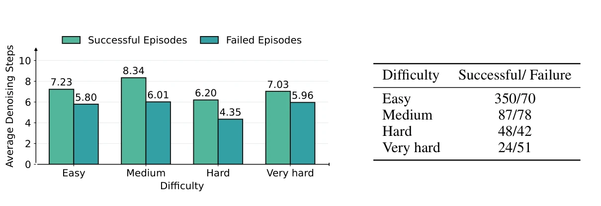

01INHERIT
Action-tail inheritance
Execute a short prefix and align the unexecuted actions with the next planning window. Cache the prior context and the motion already predicted by the VLA.
Atail = AK:H · L = H − K
Fewer Denoising Steps, Better Control
via Adaptive Action Reuse
OmniAI Group of ZJU ACES Lab Zhejiang University
Correspondence: Jie Zhang
Why restart from noise when useful actions are already there? VLA-Rolling carries forward the unexecuted action tail and adapts its refinement to the changing scene—without modifying the frozen VLA backbone.
Traditional receding-horizon control throws away the unexecuted tail of each action chunk. VLA-Rolling turns that discarded computation into the starting point for the next decision.

An action tail is not a finished plan and not fresh noise. It is a reusable intermediate state whose value depends on how the environment has changed.
A lightweight, three-stage inference framework learns when to preserve an inherited action and when to correct it. The original VLA stays frozen.

Execute a short prefix and align the unexecuted actions with the next planning window. Cache the prior context and the motion already predicted by the VLA.
A ~30M-parameter action-centric Transformer scores the reuse reliability of each tail action using visual, proprioceptive, and temporal-change information.
High-confidence actions receive less noise; uncertain actions are regenerated more aggressively. The minimum confidence sets the denoising budget for the next chunk.
No VLA retraining. The original VLA backbone remains frozen; only the lightweight confidence estimator is trained offline on temporally adjacent demonstrations.
Tail reuse reduces the amount of denoising needed, but no single denoising budget works for every sample. Confidence makes reuse adaptive rather than unconditional.
Tail initialization reaches the 10-step Gaussian baseline with 4 steps for π₀.₅ and 6 for SmolVLA, across the tested diagnostic benchmarks.

Sample-wise optimal denoising steps span 1–10. The distribution varies considerably across samples and model backbones.

Evaluated on four VLA backbones and four benchmarks. VLA-Rolling lowers chunk inference latency in all 16 model–benchmark combinations, while success rate rises in 14.
The largest latency reduction is 32.52% (MolmoAct2 on LIBERO); the largest success gain is +15.08% (SmolVLA on LIBERO-Plus).
Choose a benchmark to inspect all four VLA backbones.
| Backbone | Success rate (%)baseline → ours | Δ Success | Latency (ms / chunk)baseline → ours | Δ Latency |
|---|---|---|---|---|
| π₀.₅ | 96.38 → 97.83 | +1.45% | 168.09 → 129.60 | −22.90% |
| X-VLA | 96.03 → 96.65 | +0.62% | 135.24 → 112.79 | −16.60% |
| SmolVLA | 73.85 → 79.78 | +5.93% | 127.80 → 89.57 | −29.91% |
| MolmoAct2 | 95.50 → 95.70 | +0.20% | 291.34 → 196.61 | −32.52% |
LIBERO · Results reproduced from Table 1 of the manuscript. Success-rate changes are absolute differences (ours − baseline), shown with %; latency changes are relative percentages.
| Backbone | Success rate (%)baseline → ours | Δ Success | Latency (ms / chunk)baseline → ours | Δ Latency |
|---|---|---|---|---|
| π₀.₅ | 67.22 → 67.88 | +0.66% | 222.69 → 184.21 | −17.28% |
| X-VLA | 57.08 → 61.46 | +4.38% | 123.31 → 90.05 | −26.97% |
| SmolVLA | 65.84 → 70.74 | +4.90% | 122.88 → 102.57 | −16.53% |
| MolmoAct2 | 28.56 → 30.56 | +2.00% | 278.53 → 236.45 | −15.11% |
MetaWorld · Results reproduced from Table 1 of the manuscript. Success-rate changes are absolute differences (ours − baseline), shown with %; latency changes are relative percentages.
| Backbone | Success rate (%)baseline → ours | Δ Success | Latency (ms / chunk)baseline → ours | Δ Latency |
|---|---|---|---|---|
| π₀.₅ | 84.73 → 85.42 | +0.69% | 167.65 → 147.40 | −12.08% |
| X-VLA | 66.04 → 65.91 | −0.13% | 136.80 → 121.93 | −10.87% |
| SmolVLA | 20.74 → 35.82 | +15.08% | 130.90 → 120.97 | −7.59% |
| MolmoAct2 | 78.96 → 79.07 | +0.11% | 303.18 → 207.27 | −31.63% |
LIBERO-Plus · Results reproduced from Table 1 of the manuscript. Success-rate changes are absolute differences (ours − baseline), shown with %; latency changes are relative percentages.
| Backbone | Success rate (%)baseline → ours | Δ Success | Latency (ms / chunk)baseline → ours | Δ Latency |
|---|---|---|---|---|
| π₀.₅ | 66.54 → 67.26 | +0.72% | 172.92 → 164.27 | −5.00% |
| X-VLA | 60.68 → 60.40 | −0.28% | 131.09 → 96.99 | −26.01% |
| SmolVLA | 25.36 → 31.32 | +5.96% | 148.68 → 137.34 | −7.63% |
| MolmoAct2 | 20.18 → 22.34 | +2.16% | 387.06 → 273.95 | −29.22% |
RoboTwin 2.0 · Results reproduced from Table 1 of the manuscript. Success-rate changes are absolute differences (ours − baseline), shown with %; latency changes are relative percentages.
Which components turn action reuse into better control? With π₀.₅ fixed, Table 2 isolates tail inheritance, renoising, and adaptive denoising across three benchmarks.
Baseline measurements and component ablations reproduced from Table 2.
| Method | LIBERO | MetaWorld | LIBERO-Plus | |||
|---|---|---|---|---|---|---|
| SR (%) ↑ | Cost (ms) ↓ | SR (%) ↑ | Cost (ms) ↓ | SR (%) ↑ | Cost (ms) ↓ | |
| π₀.₅ baseline | 96.38 | 166.04 | 67.22 | 217.28 | 84.73 | 161.92 |
| Variant vs. baseline | Δ SR (%) ↑ | Δ Cost (%) ↓ | Δ SR (%) ↑ | Δ Cost (%) ↓ | Δ SR (%) ↑ | Δ Cost (%) ↓ |
| + A | −2.13% | +0.02% | +0.63% | +0.01% | −4.89% | +0.02% |
| + A + Bfixed | +0.20% | +0.02% | +0.61% | +0.02% | −0.16% | +0.02% |
| + A + B | +0.37% | +0.55% | +0.40% | +0.42% | −0.22% | +0.84% |
| + A + C | −1.48% | −22.19% | −0.62% | −15.93% | −4.29% | −11.91% |
| Full model · A + B + C | +1.45% | −23.03% | +0.66% | −16.74% | +0.69% | −12.07% |
SR = success rate; Cost = model inference time per action chunk. Δ SR is the absolute success-rate difference (variant − baseline), shown with %; Δ Cost is a relative percentage change. Table 2 uses its own baseline inference-cost measurements, which differ slightly from Table 1. Source: manuscript, p. 8.
Tail inheritance alone (+A) improves MetaWorld but reduces success on LIBERO and LIBERO-Plus. On LIBERO-Plus, the change is −4.89%; adding renoising brings it close to baseline (−0.16% with fixed noise; −0.22% with confidence-guided noise). Reusing a tail therefore needs a mechanism to correct actions that no longer fit the current observation.
Adaptive steps without renoising (+A+C) cut inference cost by 11.91–22.19%, but success remains below baseline on all three benchmarks. The full model is the only tested variant that improves success and lowers cost on all three: +1.45%, +0.66%, and +0.69% in success, alongside cost reductions of 23.03%, 16.74%, and 12.07%.
On MetaWorld, successful and failed trajectories receive different denoising budgets within every task-difficulty group. Figure 5 compares their average steps and episode counts.

Successful episodes average 1.43, 2.33, 1.85, and 1.07 more steps than failed episodes on easy, medium, hard, and very hard tasks. The largest gap is on medium tasks: 8.34 versus 6.01. These averages show that confidence-guided budget allocation distinguishes trajectories with different outcomes.
The average budget does not rise monotonically with task difficulty: successful medium tasks use more steps than successful hard or very hard tasks. Episode counts also differ across groups (from 350 successes on easy tasks to 24 on very hard tasks). Figure 5 shows an association with outcomes; it does not establish that simply adding denoising steps causes success.
An AgileX PiPER 6-DoF robot is asked to put a potato into a plate. When the target plate is switched during execution, confidence reacts and denoising increases.

Read the October 2026 manuscript from the OmniAI Group of ZJU ACES Lab, Zhejiang University, or use the BibTeX entry to cite this work.
@misc{vlarolling,
title = {VLA-Rolling: Fewer Denoising Steps,
Better Control via Adaptive Action Reuse},
author = {He, Sicheng and Pan, Yi and Yu, Qiuting and
Huang, Jiaming and Lu, Qi and Wu, Shuyan and
Feng, Hongyan and Liu, Xuanyu and Zhang, Jun and
Zhang, Jie and Zhang, Wenqi and Zhang, Xuhong and
Yin, Jianwei},
year = {2026},
month = oct,
note = {OmniAI Group of ZJU ACES Lab,
Zhejiang University},
url = {https://chenbao123ww.github.io/VLA-Rolling-site/}
}Author order and manuscript date follow the October 2026 paper.